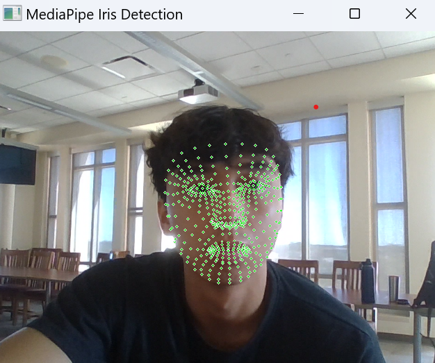
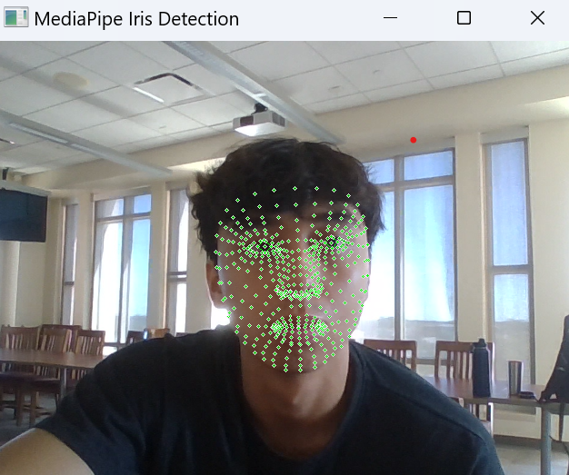
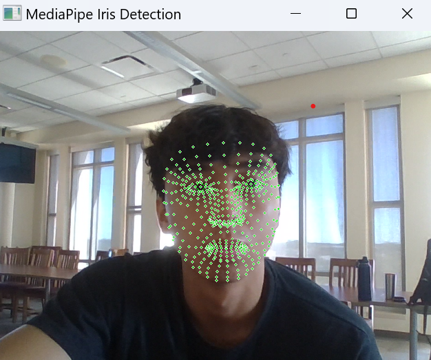
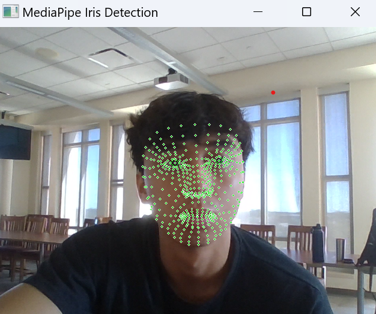
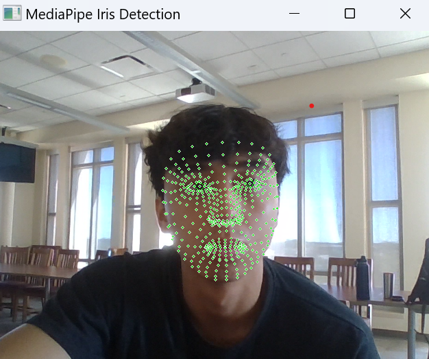

Tiktok Scroll
Tech Stack
Python, cv2, pyautogui, mediapipe
Github Repository!
Gallery

Project Details
Developed a Python application that uses hand gestures to control scrolling on TikTok.
Developed an iris-tracking application that enables hands-free scrolling on TikTok.
 


